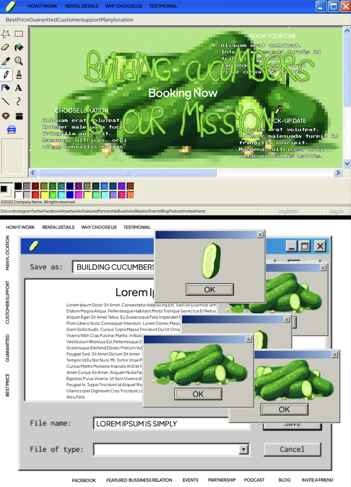
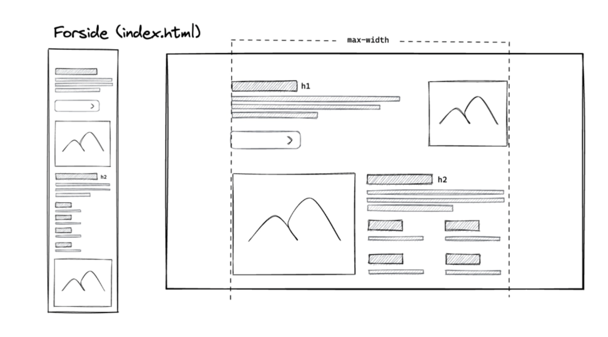
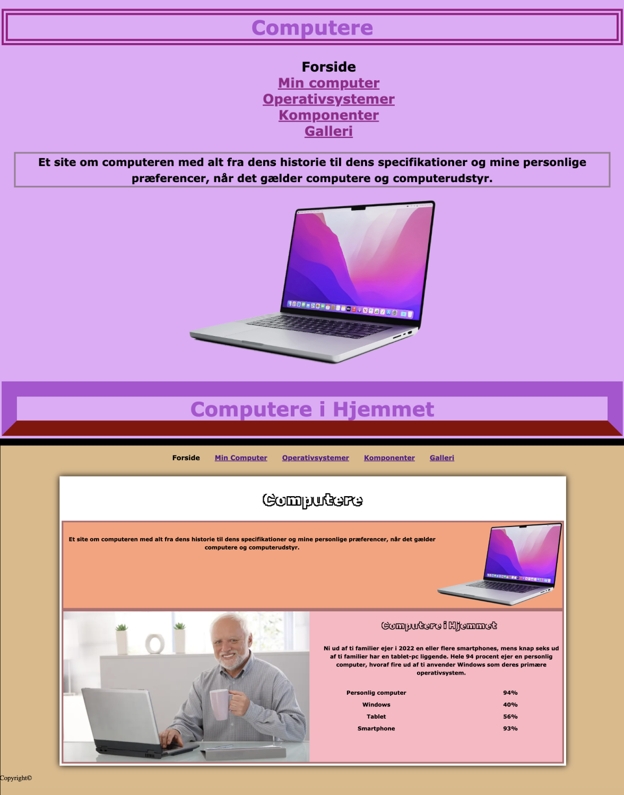

BACK
BASIC WEB
Redesigning with givin style
We were introduced to Figma, where our initial task was to redesign a website based on a chosen design style. I opted to work with Antidesign, a style that challenges conventional design rules.
Figma is an excellent program for designing website prototypes, and we will be using it extensively later in the semester.
Computers
Our first coding project centered around computers, marking my first encounter with coding. We were provided with a wireframe and a layout diagram to structure our site.
This are the results for the mobile site and the desktop version. In this theme, we were introduced to Figma for designing and testing our prototypes and VSC, where I dabbled in my very first coding attempt.
